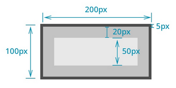

css 테두리 영역의 크리를 결정하는 속성
일반적으로 블록요소의 크기는 바깥여백 +테두리+안쪽여백을 합산한 값으로 결정
따라서 기본적으로 설정한 가로 세로크기외 바깥여백 +테두리+안쪽여백까지 계산되므로 실제 크기보다 더 커지ㅣ게 되는 상활발생- 자칫 레잉아웃을 엉낭으로 만들수 있음

한편 border-box 속성을 이용하면 브록요소의 크기를 계산할대 전체 영역을 대상으로 바깥여백 +테두리+안쪽여백도 포함시킴 단 컨텐츠 여역은 실제 설정값보다 작아질수 도 있음
일반적인 레이아웃 흐름으 ㄴ마크업이 작성된 순서에 따라 요소는 위에서 아래로 왼쪽에서 오른쪽으로 나열됨 하지만 ,float이라는 속성을 이ㅛㅇ하면 특정요소를 기본적인 배치흐름에서 벗어나 페이지의 왼쪽이나 오른쪽으로 이동시킬수 있음
즉 문서의 흐름과 관계없이 화면배치를 유연하게 할수 있음 복잠한 형태의 에이아웃을 구성하는데 필요하 ㄴ핵심 속성
float 속성이 지정된 요소는 문서의 일반덕인 흐름에서 벗어난 상태이기 때문에 뒤를 따르는 후속요소들은 다소 괴상한 모습을 보여줌 이러한 문제를 해결하기 위해서 clear속성을 적용해 특정 요소 이후로는 float의 영향을 받지 않도록 해야함